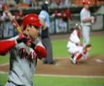
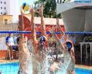

Tão antigos quanto o homen, os esportes são uma das invenções mais benéficas do homen. Além de manter o corpo saudável, ainda auxiliam na criação de uma série de comportamentos positivos, como a humildede, a união a empatia, dentre outros.
E os esportes com bola são, sem nenhuma dúvida, os mais populares. Mas você sabe a diferença entre alguns deles? É justamente isso que iremos descobrir abaixo.
| Esporte | Origem | Ambiente | Objetivo | Equipe | |||
|---|---|---|---|---|---|---|---|
| 4 | |
Frescobol | 1946, Brasil | Ao ar livre | Manter a bola no ar pelo maior tempo possível | Geralmente um contra um | |
| 1 |  | Baseboll | 1971, EUA | Campo com 1/4 de círculo, de 92 a 108,2m de raio | Realizar o maior número de corridas | Nove jogadores em cada time | |
| 2 | |
Blech Soccer | 1930, Brasil | Quadra de areia com 35 ou 37m x 26 ou 27 de largura | Realizar gols no campo adversário | Cinco jogadores em cada time | |
| 3 |  | Biribol | 1968, Brasil | Piscina com 4x8x1,3m. | Derrubar a bola na quadra adversário | 2 a 4 jogadores | |
Saiba mais acessando o site R7